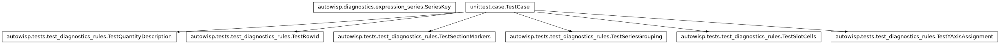
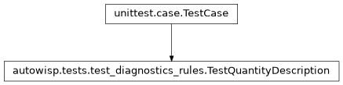
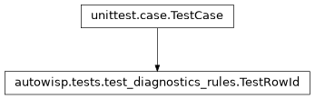
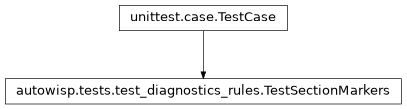
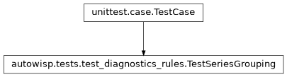
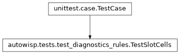
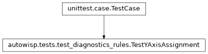

autowisp.tests.test_diagnostics_rules module
Class Inheritance Diagram

Tests for the diagnostics table’s rules, which need no project.
The decisions a series table makes that are questions about names and
arithmetic rather than about an observing project: what a row id means,
what a channel column offers, what a section header says, and which
marker a section starts with. They are pure, so they are checked here
without the throwaway project database test_diagnostics_views builds
– which is the point of having kept them pure.
The grouping of series into subplots keeps them company: it takes arrays rather than a database, and splitting it from the rules it sits beside would buy nothing.
- class autowisp.tests.test_diagnostics_rules.TestQuantityDescription(methodName='runTest')[source]
Bases:
TestCase
What a section header says about the quantity it draws.
A collapsed section shows only this, so it has to say what is plotted without the rows below it being visible.
- descriptions = {'bg_center': 'Background at the frame centre.', 'smooth_bg': 'The background, smoothed.'}
- library = {'smooth_bg': 'median_filter(bg_center[0], 5)'}
- test_a_recorded_diagnostic_shows_no_expression()[source]
It is a measurement rather than a formula, so there is none.
- class autowisp.tests.test_diagnostics_rules.TestRowId(methodName='runTest')[source]
Bases:
TestCase
The row id, a round trip through the client and back.
It becomes an HTML element id, five more element ids are built from it, and it keys the
datasetsobject the client posts back – so it has to survive all of that as an opaque string. What it deliberately does not carry is anything the row can edit: the session, the image type and the channels are all chosen in the row, and an id that changed as they were would take every element id with it.- test_a_pair_id_round_trips()[source]
The dropdown’s value, opaque to the client exactly as a row id is.
- test_a_row_names_its_quantity_and_its_place()[source]
And nothing else, those being the only things it cannot edit.
- test_an_added_row_takes_the_next_ordinal()[source]
+copies a row, and the copy needs an id of its own.
- test_an_ambiguous_field_is_refused()[source]
Failing loudly beats an id that silently pairs wrong data.
- test_an_ordinal_freed_by_a_removal_is_not_reused()[source]
One past the highest in use, not the first gap in the run.
The id is the suffix of five element ids, so a second row answering to them would show up as one row’s colour arriving on another’s.
- test_another_quantity_does_not_crowd_the_ordinals()[source]
They count per quantity, the two together making the id.
- test_the_key_comes_from_what_the_client_posts()[source]
All of it: the pair is edited in the row as the channels are.
Reading the session or the type from the id would read what the row was rendered with rather than what its dropdown now says.
- class autowisp.tests.test_diagnostics_rules.TestSectionMarkers(methodName='runTest')[source]
Bases:
TestCase
Which marker a section’s rows start with.
A starting point only: every row’s marker stays editable, so this decides what a section looks like before anyone touches it.
- test_a_marker_freed_by_a_removal_is_taken_up()[source]
Rather than left idle while a later section doubles up.
- test_a_section_avoids_the_markers_in_use()[source]
Two sections drawn alike would defeat the point of the default.
- class autowisp.tests.test_diagnostics_rules.TestSeriesGrouping(methodName='runTest')[source]
Bases:
TestCase
group_series_by_x_overlapsplits only non-overlapping ranges.
- class autowisp.tests.test_diagnostics_rules.TestSlotCells(methodName='runTest')[source]
Bases:
TestCase
What each channel column of a row offers, and what a move keeps.
Pure, so the rules can be checked without a database or a browser.
- test_a_channel_the_pair_does_not_offer_is_cleared()[source]
Rather than quietly bound to something the user never chose.
- test_a_channel_the_pair_still_offers_is_kept()[source]
The user chose it, and it remains an answer here.
- test_a_column_with_a_choice_starts_unset()[source]
Nothing picks one of several channels on the user’s behalf.
- test_a_column_with_one_channel_is_settled()[source]
Asking for a click with one possible outcome is ceremony.
- class autowisp.tests.test_diagnostics_rules.TestYAxisAssignment(methodName='runTest')[source]
Bases:
TestCase
Which quantities share a y axis, and in what order the axes come.
A user says which number each quantity should be on, that being far easier to say than an ordering; turning those numbers into axes is what this does.
- test_a_number_nothing_uses_is_skipped()[source]
Asking for 1 and 3 draws two axes, not three with a gap.
The number groups and orders; it does not count the axes, which would make an empty one in the middle.
- test_a_quantity_asked_onto_its_own_axis_gets_one()[source]
Different units on a shared x is what the second axis is for.
- test_a_quantity_is_named_once_however_many_rows_draw_it()[source]
Rows of one section share its axis and its label.
- test_a_quantity_that_is_not_drawn_makes_no_axis()[source]
A section switched off entirely leaves no empty scale behind.
- test_an_axis_keeps_its_quantities_in_section_order()[source]
Which is the order of the legend and of everything else.
- test_an_unanswerable_number_falls_to_the_first_axis()[source]
A plot is not worth failing over a malformed request.
The client sends what a dropdown said, and a page from before these existed sends nothing at all.
Sharing is the safe answer, and the usual one.
Two quantities wrongly sharing an axis show it at once – one of them is flattened – where two wrongly separated are each rescaled to fill the height and invite a comparison that is not there.
- autowisp.tests.test_diagnostics_rules._first_jd = 2460000.5
JD of the first image of the first night.
- autowisp.tests.test_diagnostics_rules._night_separation = 1.0
Nights are one day apart, so their JD ranges cannot overlap.